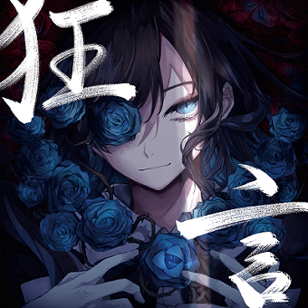

About The Music


Gira-Gira
Banyak orang yang tidak mengetahui bahwa sebenarnya lagu ini
memiliki makna yang cukup menyedihkan meskipun saat mendengarkannya
secara langsung tidak terdengar seperti lagu yang menyedihkan.
Lagu ini bercerita tentang seorang wanita yang dilahirkan dengan
wajah yang kurang cantik sehingga dia menderita dan menganggap bahwa
Tuhan menggambarnya dengan tangan kiri.
note :
[1] "Gira gira" (ギラギラ) dalam lagu ini secara literal diartikan
sebagai "berkilau", "bersinar terang" atau "menyilaukan". Namun kata
ini juga memiliki makna tersembunyi yaitu "Give Love" (dibaca "gira"
dalam pelafalan bahasa Jepang). Dengan kata lain, kata "gira gira"
juga dapat berarti "berikan aku cinta"
[2] "Gira" juga dapat berarti "tatapan dengan tajam", "sorotan",
atau "cahaya menyilaukan" (berasal dari giratsuku / ぎらつく).
[3] "Gira" juga bisa mengacu pada makna "benci" (berasal dari girai
atau kirai / 嫌い)
[4] "Gira gira" juga dapat berarti "menyala", yang dalam hal ini
mirip dengan makna "mera mera".
[5] Dalam lirik lagu ini "make
up" disebut sebagai senjata.
Profile
Ado

Ado (アド, lahir 24 Oktober 2002) adalah seorang penyanyi asal
Jepang. Agensinya adalah Cloud Nine. Label musiknya adalah Virgin
Music, anak perusahaan Universal Music. Pada Januari 2017, dia
mengunggah lagu “Kimi no Taion” milik Kuwagata P di situs Nico Nico
Douga, dan memulai aktivitas musiknya sebagai penyanyi Vocaloid.
Selama aktivitas musik, dia tampil sebagai penyanyi misterius yang
tampa menunjukan penampilan.
Pada Oktober 2020, diusia 18 tahun, dia membuat debut majornya
dengan lagu pertamanya “Usseewa”, yang ditulis oleh produser
Vocaloid syudou. Lagu ini langsung menarik perhatian, dan menjadi
populer terutama di media sosial seperti TikTok. Video musik yang
diunggah di YouTube telah melampaui 200 juta penonton pada Januari
2022, dan “Usseewa” dinominasikan untuk penghargaan New Words and
Buzzwords Awards pada tahun 2021.
Lyric Songs
Ado - ギラギラ (Gira Gira) (Romanized) Lyrics
[Verse 1]
Aa mou hontou ni nante subarashiki sekai
Nde kyou mo mata onore no shuuakusa ni madou
Da no ni hito wo sukitte omou kimochi dake wa
Icchoumae ni aru kara modaeterun deshou
[Verse 2]
Ugly shoujiki itte watashi no kao wa
Sou kamisama ga hidarite de kaita mitai
Hitsuzen konoyo ni aru rabu songu wa dore hitotsu
Zettai watashimuke nanka janai deshou
[Pre-Chorus]
Tsukaimichi no nai kuchizuke awaremi wo hoshiimama ni
Supankooru no kasabuta de mi wo mamoru
Aisarenai kurai nan da
[Chorus]
Giragira kagayaite watashi wa yoru wo nomi
Rap, tap, tap, tap
Ima ni mitero kono love!
Me ni shimiru wa ichi miriguramu no hanabi
Drag on, drag on
Nante fanii konoyo wa bizaaru!
[Refrain]
Gira (Gira)
Giragira (Gira)
Gira (Gira)
[Verse 3]
Unknown oshakasama mo zonzenu uchi ni
Mou sukoyaka ni kurutteita mitai
Sore wa sekai no hou ka sore to mo watashi no hou desu ka?
Kyousei wa hana kara muri deshou
[pre-chorus]
Magaimono koso kanashikere muga muchuu hashiru hashiru
Tsuyoi sanseiu ga arai-nagasu mae ni
Keikou shoku no aza daite
[Chorus]
Meramera hi wo fuite watashi wa yoru no ookami
rap, tap, tap, tap
Soko de mitero kono ranbu!
Tsuyoku wo nari anatanari no meiku-appu de
Flap up, flap up
Fui ni fuan ni
[Bridge]
Kodoku wa gasorin hikutsu na machi wo yuku
Me wo tojite mou ii kai mou ii kai
Moshi mo kamisama ga hidarikiki nara
Donna ni shiawase ka shirenai, oh
[Chorus]
Giragira kagayaite watashi wa yoru wo nomi
Rap, tap, tap, tap
Ima ni mitero kono love!
Me ni shimiru wa ichi miriguramu no hanabi
Drag on, drag on
Nante fanii konoyo wa bizaaru!
[Refrain]
Gira (Gira)
Giragira (Gira)
Gira (Gira, ah)
[pre-chorus]
Give love hana wa michite (Giragira)
Ari no manma ja irarenai dare mo kare mo
Nante subarashiki sekai da!
Giratsuite kou
untuk lagu lainnya silahkan klik disini atau klik "list gallery musik" diatas